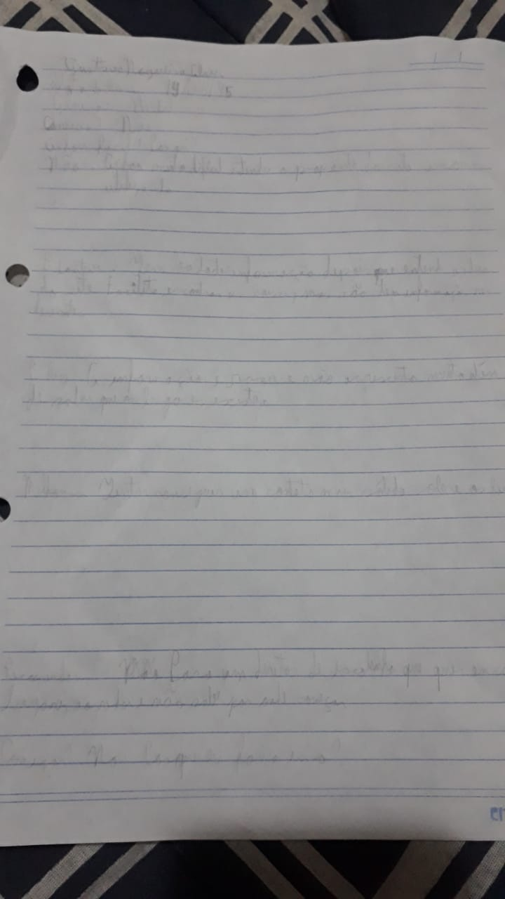

Cultura Educa Avaliação
Home
Extreme User Interview
Participante:
Gustavo
Descrição:
Familiaridade com computadores intermediária (usa computadores frequentemente há um bom tempo e sabe se virar)
Data de nascimento:
14/03/1995
Gênero:
Homem cis
Você conhecia o site Cultura Educa?
Não
Você achou/acha fácil de usar?
Não.É difícil entender o propósito do site e como usá-lo. Não é possível ver o nome das instalações do mapa, sendo necessário buscar por área até encontrar
O que você achou de positivo nele?
Tem informações sobre vários lugares diferentes
O que você achou de negativo nele?
TEssas informações são relativamente rasas. Não tem, por exemplo, o horário de funcionamento, informações sobre sessões ou redes sociais como o Google Maps.
“É como querer conhecer uma pessoa e pedir o RG dela. Tem dados, mas não são relevantes.”
Que melhorias você gostaria que houvesse?
Tentar conseguir informações mais sólidas e úteis para o usuário sobre as localizações.
Você recomendaria o site? Por que?
Não. Talvez para um professor ou diretor de escolinha que quer encontrar lugares e atividades ao redor e não sabe por onde começar, mas há opções melhores.
Você pretende começar/continuar a usar?
Não
Fly on the Wall
Observação
O participante imediatamente utilizou a funcionalidade de camadas para testar o que fazia. Ele tentou clicar nos pontos que apareceram, mas, por algum bug do site, não funcionou, o que fez com que pensasse que essa funcionalidade não existia. Então, sua experiência se resumiu a olhar o nome da região, ir em Buscar, procurar na região e tentar encontrar o lugar desejado. Não encontrou as informações que queria a respeito dos lugares.
